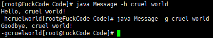

Java踩坑记
一.基础
关键字与标识符，一般全小写的就是关键字
命名规则
硬性规范- 标识符包含
英文字母26个（区分大小写），0-9数字，$（美元符号）和_下划线 - 标识符不能以数字开头
- 标识符不能是关键字
- 标识符包含
命名规范
软性建议- 类名规范：首字母大写，后面每个单词首字母大写（大驼峰式）
- 变量名规范：首字母小写，后面每个单词首字母大写（小驼峰式）
- 方法名规范：同变量名
变量分类
- 1.字符串常量
- 2.整数常量
- 3.浮点数常量
- 4.字符常量
- 5.布尔常量：true，false
- 6.空常量：null
基本格式
1
2
3
4
5public class DocuemtName {
public static void main(String[] args){
......
}
}两个单引号之间必须有且仅有一个字符，没有不行
单引号中不能有两个字符，只能有一个
空常量不能直接打印输出
在public变量名时候注意不能跨目录
点运算符（.）将一个对象同它的某一种方法连接起来
{object.method(parameters) //method}对象
- 对象同时包括方法和字段（数据）
- 类是任意数目的对象的说明
- 创建一个对象，要将关键字new和类的名称连用
new function - 调用一个对象的方法，要使用点运算符
java中所有函数都属于某个类的方法，因此java中的main方法必须有一个外壳类，也就是
1
2
3
4
5
6public class welcome { //此处welcome为外壳类
public static void main(String[] args)
{
......
}
}java中的main方法必须是静态的
需要程序结束之后运行其他内容的时候需要用到
System.exitSystem.out.println()输出之后默认换行,而System.out.print()输出默认不换行，输出还是跟在后面
二.数据类型
| 类型 | 存储需求 | 取值范围 |
|---|---|---|
| int | 4 bit | -2147483648~2147483647 |
| short | 2 bit | -32768~32767 |
| long | 8 bit | -9223372036854775808~9223372036854775807 |
| byte | 1 bit | -128~127 |
| 类型 | 存储需求 | 取值范围 |
|---|---|---|
| float | 4 bit | ±3.40282347E+38F(有效位数为6~7) |
| double | 8 bit | ±1.79769313486231570E+308(有效位数为15位) |
| .用于表示出错的三个浮点数字 |
- 正无穷大
- 负无穷大
- NaN(不是一个数字)
- Math.sin
- Math.cos
- Math.tan
- Math.atan
- Math.atan2
- Math.exp
- Math.log
- Math.log10
- Math.PI
- Math.E
- 在使用Math函数的时候需要在顶部添加
import static java.lang.Math.* - 对浮点数进行射入运算以便于得到最接近的整数，使用Math.round（注意在对数值直接进行强制转化的时候并不会自动四舍五入）
1 | public class Qzlxzh{ |
1 | public class Qzlxzh{ |
++n 表示在运行的时候先自增再运算
n++ 表示在运行时先运算再自增
不能使用Java保留字作为变量名
声明变量之后必须要初始化变量方可使用，否则在C++，Java中均会报错
- C++区分变量的声明和定义 但是Java中不区分
1
2int i = 10; //这是一个定义
extern int i = 10; //这是一个声明 - final关键字表示这个常量只能被赋值一次，常量名使用全大写
三.类与对象
对象与类是Java中面向对象的两个最基本概念，一个类可以有多个对象
类有两大成员：属性与方法
类名需要符合Java标识符的命名规范
Java中允许多个类出现在同一个源文件中，但最多只能有一个类是public的，如果有一个public类，那么源文件必须与类名保持相同
修饰符 + 类型 + 变量名来定义一个类类是构造对象的模板
对象中的数据称为实例域，操作数据的过程称为方法
每个对象都有一组特定的实例域值，这些值的集合就是这个对象的当前状态
封装，给对象赋予了黑盒的特征，提高重利用性与可靠性
类之间常见的三种关系：依赖（耦合），聚合，继承
在Java中任何对象变量的值都是对存储在另一个地方的一个对象的引用
一个对象变量并没有实际包含一个对象，而仅仅引用一个对象
不可将方法用于一个值为null的对象上
局部变量不会自动的初始化为null，需要用new或者将其设置为null进行初始化
关键字this表示隐式参数
实例域final大都应用于基本类型域或不可变类域
setOut方法是一个本地方法，本地方法可以绕过Java语言的存储控制机制静态方法是不可向对象实施操作的方法，可以认为静态方法是没有this参数的方法
使用静态方法的两种情况
- 一个方法不需要访问对象状态，其所需的参数都是通过显式参数提供
- 一个方法只需要访问类的静态域
（对象构造）多个方法有相同的名字，不同的参数，便产生了重载，通过不同的方法给出的参数类型与特定方法调用所使用的值的类型进行匹配来挑选出相应的方法，不能有两个名字相同，参数类型也相同，返回值类型不同的方法
（包）在导入所需要的包的时候要注意冲突性
import语句不仅仅可以导入类，还可以导入静态方法和静态域，特定的方法和域
（包作用域）控制修饰符访问级别
类设计技巧
- 一定要保证数据私有
- 一定要对数据初始化
- 不要在类中使用过多的基本类型
- 不是所有的域都需要独立的域访问器和域更改器
- 将职责过多的类进行分解
- 类名和方法名要能够体现它们的职责
- 优先使用不可变的类
四.数组
数组也是数据结构的一种，用来存储同一类型值的集合，通过下标可以访问数组中的元素。
声明数组变量时需要指出数组类型（数据元素类型紧跟[]和数组变量的名字）,使用
new运算符进行数组创建创建完一个数组并且没有附任何初值的时候那么数组中所有的元素都会初始化为0，而boolean数组的值会初始化为false，对象数组的元素会初始化为特殊值null
一旦创建数组就不能改变它的大小，如果经常需要更改的话参考
数组列表（array list）增强for循环
for each,语法：1
for(variable : collection) statement
初始化数组给值的时候可以不调用 new ，可以初始化一个匿名数组 ：
n = new int[] {1,2,3,4,5}这样创建的数组会利用括号中提供的值进行初始化，数组大小就是初始值的个数可以使用
=将一个数组变量拷贝给另一个数组变量（非数组本身），这时两个变量引用的是同一个数组如果想要拷贝数组本体（也就是数组所有值）到一个新的数组中去的话就要使用
Arrays类的copyOf方法，语法：1
int[] copiedLuckyNumbers = Arrays.copyOf(luckyNumbers, luckyNumbers.length) //其中luckyNumbers.length代表所创建的新的数组的大小，通常可以使用这个方法来增加数组的大小，多余的值会被进行默认赋值
命令行参数
每一个Java程序都带一个String arg[]参数的main方法，这个参数是可以接收一个字符串数组，也就是命令行参数1
2
3
4
5
6
7
8
9
10
11
12
13public class Message
{
public static void main(String args[])
{
if(args.length == 0 || args[0].equals("-h"))
System.out.print("Hello,");
else if(args[0].equals("-g"))
System.out.print("Goodbye,");
for(int i = 1; i < args.length; i++)
System.out.print(" " + args[i]);
System.out.println("!")
}
}

- 多维数组初始化
1
balances = new double[NYEARS][NRATES]
知道数组元素时可不调用new，直接简化书写形式对多维数组进行初始化
1 | int[][] name = |
五.注释
- javadoc 实用程序从下面几个特性中抽取信息
- 包
- 公有类与接口
- 公有的和受保护的构造器及方法
- 公有的和受保护的域
类注释
- 类注释必须放在improt语句之后，类定义之前
例：
1 | /** |
方法注释
- 每一个方法注释必须放在所描述的方法之前
- @peram变量描述
- @return描述
- @throws类描述
域注释
- 只需要对公有域（一般静态常量）建立文档
通用注释
- @author 姓名
- @version 文本
- @since 文本
- @deprecated 文本
- @see 引用
六.继承
- 类、超类和子类
- Object：所有类的超类
- 泛型数组列表
- 对象包装器与自动装箱
- 参数数量可变的方法
- 枚举类
- 反射
- 继承的设计技巧
七.JDBC
概述：JDBC，Java Database Connectivity ——Java数据库连接
JDBC由一组用Java语言编写的类与接口组成
驱动程序（Driver）来实现对不同关系型数据库的操作
JDBC操作数据库基本步骤（六步法）
1.注册驱动（只需一次）
2.建立连接（Connection）
3.创建对象和执行SQL的语句
4.执行SQL语句
5.处理执行结果
6.释放资源（关闭）
- JDBC常用类和接口
| 序号 | 接口名或类名 | 说明 |
|---|---|---|
| 1 | java.sql.Connection | 与特定数据库的连接（会话）。能够通过getMetaData 方法获得数据库提供的信息、所支持的SQL 语法、存储过程和此连接的功能等信息。代表了数据库。 |
| 2 | java.sql.Driver | 每个驱动程序类必需实现的接口，同时，每个数据库驱动程序都应该提供一个实现Driver 接口的类。 |
| 3 | java.sql.DriverManager | 管理一组JDBC 驱动程序的基本服务。作为初始化的一部分，此接口会尝试加载在“jdbc.drivers”系统属性中引用的驱动程序。只是一个辅助类，是工具。 |
| 4 | java.sql.Statement | 用于执行静态SQL 语句并返回其生成结果的对象。 |
| 5 | java.sql.PreparedStatement | 继承Statement 接口，表示预编译的SQL 语句的对象，SQL 语句被预编译并且存储在PreparedStatement 对象中。然后可以使用此对象高效地多次执行该语句。 |
| 6 | java.sql.CallableStatement | 用来访问数据库中的存储过程。它提供了一些方法来指定语句所使用的输入/输出参数。 |
| 7 | java.sql.ResultSet | 负责存储查询数据库的结果，并提供一系列的方法对数据库进行新增、删除和修改操作，也负责维护一个记录指针（Cursor），记录指针指向数据表中的某个记录，通过适当地移动记录指针，可以随心所欲地存取数据库，加强程序的效率。 |
| 8 | java.sql.ResultSetMetaData | 可用于获取关于ResultSet 对象中列的类型和属性信息的对象。 |
| 9 | java.sql.DatabaseMetaData | 包含了关于数据库整体元数据信息。 |
- 数据库连接技术
JDBC-ODBC桥接
本地API驱动
网络协议驱动
纯粹的Java驱动
- MySQL的注册驱动
1 | class.forName("com.mysql.cj.jdbc.Driver") //这是8.0以上版本的，以下版本去掉cj |
建立连接语句
1
connection con = DriverManager.getConnection(url,"用户名","Pass");
书写SQL语句
1
2
3String sql = null;
sql = "create databases mysql"; (执行语句)
pStmt.executeUpdate(sql);查询结果
1
2
3
4
5
6
7rs = (ResultSet)pStmt.executeQuery();
while(rs.next())
{
int id = rs.getInt(1);
String name = rs.getString(2);
}
八.File/IO
File 利用此函数对文件进行操作
1
File filename = new File(pathname: " ");
FileReader FileWriter进行文件的读与写(以字符的方式进行)
1
2FileReader fr = new FileReader(file)
FileWriter fw = new FileWriter(file)FileInputStream FileOuputStream同样可以对文件进行读写（使用字节的方式）
1
2FileInputStream fi = new FileInputStream(file1);
FileOutputStream fo = new FileOutputStream(file2);